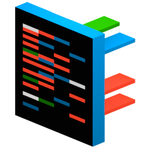
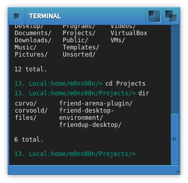

	<div id="FUPUpdateList" class="ContentFull ScrollArea"">

		<div class="Padding">

			<h1>
				Updates archive
			</h1>
			
			<hr/>
			
			<h2>
				Some interesting points - please read and respond
			</h2>

			<div style="float: right; width: 25%; margin: 15px 0 15px 15px">
				<br>
				<figcaption style="font-size: 14px"><strong>David J. Pleasance</strong>,<br>Director International Sales & Marketing</figcaption>
			</div>

			<ol style="line-height: 23px; padding: 0 0 0 16px">
				<li>
					The team behind the Friend Unifying Platform, Friend Software Labs are a small but completely dedicated team of developers and commercial managers. The launch of Beta 4 is the precursor to release candidate 1. We are very close to a complete and sophisticated commercial version. Please take a close look – I am certain you will be impressed.<br><br>
				</li>
				<li>
					If you have already registered as a beta tester please start using the solution and see how it can benefit your daily workflow. You can collaborate with others both text based and in video group chats. You can create documents, share them with others or keep them privately. If you did not try out the beta yet - now is the time, start writing documents and applications inside the same Workspace. Listen to music and play.<br><br>
				</li>
				<li>
					We are incredibly lucky to be growing our network of partners with whom we are forming strong relationships of mutual benefit. Do you have something we should be discussing a cooperative strategy for? Do you have that killer web app that benefits from a Workspace to live on and other apps to interact with? Get in touch!<br><br>
				</li>
				<li>
					We are also about to launch Friend Community and have appointed forum administrators in many countries. This will be a very well supported network of “like minded” people, who with the unique technology Friend Unifying Platform delivers, will be able to communicate live around the globe as well as share all kinds of files across devices.<br><br>
				</li>
				<li>
					Finally a «call to arms»: as FriendUP is growing fast we know we we'll be in need of additional talent to complement our superb team. If you believe you have the skills to enhance our project, please contact us now - as we intend to commence recruitment in the very near future. Please clearly mark your e-mail «RECRUITMENT» and send to <a href="mailto:pleasance@friendos.com">pleasance@friendos.com</a>.<br>
					<br>
					<em>Sincere thanks,</em><br>
					<br>
					<strong>David J. Pleasance</strong>
				</li>
			</ol>
			
			<h2>
				Version 1.0 beta4 - 27.06.2016
			</h2>
		
			<p>
				Beta 4 is a release with a lot of stability, speed and under the 
				hood improvements. We have worked to make our DOS drivers stable
				enough to prevent any data loss. Check it out.
			</p>
			<p>
				We also enhanced our collaboration app Friend Chat extensively. 
				Author now lets you read and write to OpenOffice and MS Office 
				formats (again) - just choose .doc or .odt as file extension and 
				see the magic happen.
			</p>
			<p>	
				We <b>encourage all beta testers to get in touch with us</b> - 
				we are actively looking for partners, developers, early adaopters 
				- you can either write us a mail to 
				<a href="mailto:beta@friendos.com">beta@friendos.com</a> or open 
				<a href="javascript:ExecuteApplication('FriendChat')">Friend Chat</a> and 
				join us on the <em>#friendup</em> IRC channel.
			</p>
		
			<p>
				<h2>New features:</h2>
			</p>
		
			<p>
			<a href="javascript:ExecuteApplication('FriendJukebox')">Friend Jukebox music player</a> now has a oscilliscope visualizer.
			</p>
			<p style="overflow:hidden; height:16px; clear:both; flaot:none;"><em></em></p>	
		
			<p>
			<a href="javascript:ExecuteApplication('FriendCreate')">Friend Create</a>, our programmers environment, now has project management and third party library support.
			</p>
			<p style="overflow:hidden; height:16px; clear:both; flaot:none;"><em></em></p>	
		
			<p>
			<a href="javascript:ExecuteApplication('Issues')">Issues app</a> fixed (json separator problem).
			</p>
			<p style="overflow:hidden; height:16px; clear:both; flaot:none;"><em></em></p>	
		
			<p>
			<a href="javascript:ExecuteApplication('Mountlist')">Mountlist</a>, our disk drive manager now has functionality to handle your drives.
			</p>
			<p style="overflow:hidden; height:16px; clear:both; flaot:none;"><em></em></p>	
		
			<p>
				<h2>Other new features:</h2>
			</p>
					
			<ol>
				<li>New menu items, cleaned up unfinished features - hide all windows.</li>
				<li>Copy now works to directory icons.</li>
				<li>Workspace has support for mp4, ogg, avi and webm video wallpapers.</li>
				<li>Disk drive management now fully usable for several DOS drivers.</li>
				<li>FriendUP now notifies the user when sending and receiving data.</li>
				<li>Icon information updated, with added support for volumes.</li>
				<li>Workgroups for users are now implemented.</li>
				<li>DOS Driver for Workgroup drives implemented. Share files in groups!</li>
				<li>Directory view icons now have clickable download links.</li>
				<li>Added workgroups and workgroup aware DOS driver.</li>
				<li>Workspace is now localized in Norwegian and English.</li>
				<li>Workspace themes; fenster, friendup, amigadark.</li>
				<li>Workspace themes are now dynamic and generate compiled theme cache.</li>
				<li>Workspace can share apps on guest accounts.</li>
				<li>Workspace has touch desktop mode.</li>
				<li>Better touch sensitivity on menus.</li>
				<li>Better hiding of menus.</li>
				<li>DOS Driver documentation through the System device.</li>
				<li>FriendChat: Invite people not using FriendUP to live sessions with private and public links</li>
				<li>FriendChat: Limit number of participants in a live room, excess will be placed in a queue</li>
				<li>FriendChat: Drag and drop files from Workspace to share as links</li>
				<li>FriendChat: Preview of image links</li>
				<li>FriendChat: IRC - nick highlight, TLS/SSL support, SASL support, CSS themeing of chats</li>
				<li>FriendChat: Support for end-to-end encryption in treeroot chat ( private / public key )</li>
			
			</ol>
		
			<p>
				<strong>Bug fixes:</strong>
			</p>
		
			<ol>
				<li>Login prompt tells which browsers work.</li>
				<li>Workspace menu now disables options that can not take effect.</li>
				<li>Directory views added refresh events on resize without removing them.</li>
				<li>Running shell scripts now properly respects variables after each run!</li>
				<li>Hitting the 'delete' key didn't delete any selected files.</li>
				<li>Double clicking the login button could lead to weird effects in Workspace.</li>
				<li>Speedup of loading files using the File class (faster loading generally).</li>
				<li>Clicking on Workspace icons focuses on Workspace and gives correct menus.</li>
				<li>You no longer will lose your session if you accidentally leave the Workspace.</li>
				<li>Fixed file conversions. Author now writes to .odt and .doc again.</li>
				<li>Resizing of views are now accurate.</li>
				<li>Fixed loss of files with the same filename on the same drive when performing "write".</li>
				<li>FriendChat: Server stability, +++</li>
			</ol>
		
		
			
			
			<hr/>
			
			<h2>
				Version 1.0 beta3 - 08.04.2016
			</h2>
			
			<p>
				This is the third beta in our public beta programme. In this version, we are focusing on 
				improving the user applications and moving our APIs further to allow for third party
				libraries to be used by our application developers.
			</p>
			
			<p>
				<h2>New features:</h2>
			</p>
			
			<p><a href="javascript:ExecuteApplication('Artisan')"> <strong style="font-weight:700;"> Artisan</strong></a> now can save and load projects with permissions, files list and libraries. Projects can now run with third party javascript libraries. Artisan projects now runs javascript assets at run time like $( document ).ready. We are working on a video tutorial to get you started with Artisan project management. Stay tuned :)</p>
			<p style="overflow:hidden; height:16px; clear:both; flaot:none;"><em></em></p>			

			<p><a href="javascript:ExecuteApplication('Author')"> <strong style="font-weight:700;"> Author</strong></a> is now responsive and "remembers" its state. You can start editing a document on your PC. Just log off and continue where you left off on your tablet or mobile.</p>
			<p style="overflow:hidden; height:16px; clear:both; flaot:none;"><em></em></p>
			
			<p><a href="javascript:ExecuteApplication('Wallpaper')"> <strong style="font-weight:700;">Wallpaper</strong></a> - polished off to allow you to set background for both your desktop and windows.</p>
			<p style="overflow:hidden; height:16px; clear:both; flaot:none;"><em></em></p>
			
			<p><a href="javascript:ExecuteApplication('Hello')"> <strong style="font-weight:700;">Project Hello</strong></a> - received *many* additions and changes. IRC private messages, with live invite. IRC user list is sorted on name and mode, flash new messages and user join, topic is shown when joining a channel. Away and autoaway for IRC, with away-nick. Clicked links open in a new tab (rightclick -> open in tab before). Chat in live sessions, look for the keyboard i options. Live grid support 1-12 people, does not hide people on extreme aspect ratios. Most buttons have tooltips. Improved login security. Minified script and css files, things load faster. Proxy support.<em></em>
			</p>
			<p style="overflow:hidden; height:16px; clear:both; flaot:none;"><em></em></p>
			
			<p>
				<h2>Other new features:</h2>
			</p>
			<ol>
				<li>Added support for Application sessions.</li>
				<li>Calculator is now responsive.</li>
				<li>Workspace: Added gamepad class for VR.</li>
				<li>Friend Core: got many speedups overall.</li>
				<li>Friend Core: experimental WebDAV support enabled.</li>
				<li>Documentation: More info on Workspace file management.</li>
				<li>Wallpaper: Final functionality completed.</li>
				<li>Project Hello: Many new additions and changes.</li>
			</ol>
			
			<p>
				<strong>Bug fixes:</strong>
			</p>
			
			<ol>
				<li>Fixed screen title bug when clicking from views on different screens.</li>
				<li>Fixed HTTP non-blocking read/writes not completing.</li>
				<li>.jsx scripts will use sessionid, not empty, non working authid.</li>
				<li>Gear VR sessions won't be confused with clicks and the soft-keyboard.</li>
				<li>Artisan won't load a file that is already loaded in the same editor instance.</li>
				<li>File dialog buttons were badly positioned.</li>
			</ol>
			
			<hr/>
			
			<h2>
				Version 1.0 beta2 - 29.02.2016
			</h2>
			
			<p>Welcome to our second public beta. We have worked hard behind the scenes and tried to increase the usefulness of FriendUP with this release. We will start with the most improved and nice new added apps:</p>
			
			<h3>App updates (click app name or icon to start the app)</h3>

			<p><a href="javascript:ExecuteApplication('Author')"> <strong style="font-weight:700;"> Author</strong></a> has received a lot of new features. Our goal is to have a fully fledged writing tool by version 1.0. For now we have a better GUI, centered, page-like canvas for writing, as well as more editing options.</p>
			<p style="overflow:hidden; height:16px; clear:both; flaot:none;"><em></em></p>
			
			<p><a href="javascript:ExecuteApplication('Issues')"> <strong style="font-weight:700;">Issues</strong></a> - a new app - lets you report bugs and missing features.</p>
			<p style="overflow:hidden; height:16px; clear:both; flaot:none;"><em></em></p>
			
			<p ><a href="javascript:ExecuteApplication('Hello')"> <strong style="font-weight:700;">Project Hello</strong></a> - our project Hello lets you easily participate in the #friendup communication on IRC. In addition it gives you a great text and peer-to-peer videochat client. We could not decide on a name yet.</li>
			<p style="overflow:hidden; height:16px; clear:both; flaot:none;"><em></em></p>

			<p><a href="javascript:ExecuteApplication('Wallpaper')"> <strong style="font-weight:700;">Wallpaper</strong></a> - Fallback on background color, better control over wallpaper and icon window background.</p>
			<p style="overflow:hidden; height:16px; clear:both; flaot:none;"><em></em></p>
			
			<p><a href="javascript:ExecuteApplication('SVGEdit')"> <strong style="font-weight:700;">SVGEdit</strong></a> - a new app that we have started to port to FriendUP. It's not bug free yet but it show what's possible in web apps today. Stay tuned for proper FriendUP integration of SVGEdit.</p>
			<p style="overflow:hidden; height:16px; clear:both; flaot:none;"><em></em></p>
			
			<p ><a href="javascript:ExecuteApplication('Astray')"> <strong style="font-weight:700;">Astray</strong></a> - a simple yet entertaining labyrinth-get-me-outtahere game.</p>
			<p style="overflow:hidden; height:16px; clear:both; flaot:none;"><em></em></p>
			
			<p><a href="javascript:ExecuteApplication('Dingo')"> <strong style="font-weight:700;">Shell</strong></a> - our Dingo shell gets its focus back after operations.</p>
			<p style="overflow:hidden; height:16px; clear:both; flaot:none;"><em></em></p>

			<p><a href="javascript:ExecuteApplication('Calculator')"> <strong style="font-weight:700;">Calculator</strong></a> - a very simple calculator ported to FriendUP :)</p>
			<p style="overflow:hidden; height:16px; clear:both; flaot:none;"><em></em></p>


			
			<p>
				<strong>New features:</strong>
			</p>
			
			<ol>
				<li>Friend Core: New core with more caching features and css/js load speed increase.</li>
				<li>Workspace: When logging in from another location (b), you get the option of renewing your session at location (a).</li>
				<li>Workspace: Defaults to an "Apple style" global menu.</li>
				<li>Workspace: Better async loading of applications.</li>
				<li>Workspace: Faster loading of css and Javascript for less latency impact.</li>
				<li>Wallpaper: Fallback on background color, better control over wallpaper and icon window background.</li>
				<li>Workspace: Improvements on touch interface (switch screens with swipe).</li>
				<li>Workspace: New preferences applications; Language, Security, Mimetypes, Account settings.</li>
				<li>API: Screens and Views behave more the same on an API level.</li>
				<li>Author: Better GUI, centered, page-like canvas for writing.</li>
				<li>Author: More editing options.</li>
				<li>Dormant: System now has more functions to play with using DOS scripting.</li>
				<li>API: Added vertical tabs.</li>
				<li>Hello: Lots of UI fixed.</li>
				<li>Hello: Much easier to setup new accounts.</li>
				<li>Hello: IRC client improved with support for perform and history.</li>
				<li>Hello: Frameskipping on video chat.</li>
				<li>Hello: Better live invite requesters.</li>
				<li>Hello: Speech synthesis added for notifications and private chat.</li>
			</ol>
			
			<p>
				<strong>Bug fixes:</strong>
			</p>
			
			<ol>
				<li>Author: Fixed broken save functionality when cancelling save.</li>
				<li>Login prompt: Don't show message if there was no failed attempt.</li>
				<li>Friend DOS: 'kill' command works again (spelling mistake).</li>
				<li>Friend DOS: Added support for makedir command.</li>
				<li>Friend DOS: Fixed broken save functionality when cancelling save.</li>
				<li>Friend DOS: Properly performs callbacks on some commands.</li>
				<li>Workspace: Fixed bug with wallpaper not always loading.</li>
				<li>Workspace: Run command now remembers last command run properly.</li>
				<li>Workspace: Fixed bug with slow network and async postmessage.</li>
			</ol>
			
			<hr class="Space"/>
			
			<h2>
				Version 1.0 beta1
			</h2>
			
			<p>
				Welcome to the v1.0 line. Until April, 2016, we intend to gradually
				stabilize all of our features. We will start on the critical features,
				and then polish the less critical ones towards April.
			</p>
			
			<p>
				<strong>New features:</strong>
			</p>
			
			<ol>
				<li>Language: Added language preferences for voice language.</li>
				<li>Shell: Basic tab autocompletion implemented.</li>
				<li>DoIt!: Can load and run scripts.</li>
				<li>DOS Drivers: All dos drivers use the same javascript class.</li>
				<li>DOS Drivers: All file notifications emitted from Door class.</li>
				<li>ARENACM: This DOS driver now works as intended on a basic level.</li>
				<li>Workspace: You can now connect drives from the Workspace menu.</li>
				<li>Workspace: Setup your personal profile.</li>
				<li>Workspace: Can alter basic account info.</li>
				<li>Workspace: Touch improvements.</li>
				<li>System: File and module permissions honored pr. application.</li>
				<li>System: Mimetypes now configurable and implemented.</li>
				<li>System: Screens app can open, close and list screens.</li>
				<li>Friend Core: Finished and enabled SSL.</li>
				<li>WideWeb: Navigation works better. Can read local files.</li>
				<li>Calculator: New app added.</li>
				<li>FriendDOS: Support ":" operator.</li>
			</ol>
			
			<p>
				<strong>Bug fixes:</strong>
			</p>
			
			<ol>
				<li>Workspace: Fixed resizing of open screens on device screen rotation.</li>
				<li>Workspace: Screen swapping with slide left or right.</li>
				<li>Workspace: Duplicate filenames not allowed.</li>
			</ol>
			
			<hr class="Space"/>
			
			<h2>
				Version 0.9
			</h2>
			
			<p>
				This is the ninth update to FriendUP, and the last one before we
				enter the official 1.0 beta phase. By now, all features have been
				mapped and implemented (fully or partially). It is also the time
				when we ramp up recruitment of new beta testers.
			</p>
			<p>
				Incidentially, this is also the xmas release! We wish you all a great xmas, and
				a happy - happy New Year!!
			</p>
				
			<p>
				<strong>New features:</strong>
			</p>
			
			<ol>
				<li>Minipaint: More integration with FriendUP. Load functionality with file requester.</li>
				<li>Minipaint: Very early save functionality, only supporting PNG for now.</li>
				<li>Documentation: Autoindexing of application documentation. Added Author as first test.</li>
				<li>Screens: Fullscreen mode on screens (use the whole screen).</li>
				<li>Screens: Now gets events from load and save on File objects.</li>
				<li>Workspace: Switch screens with CTRL+M everywhere, quit application with CTRL+Q.</li>
				<li>Workspace: More improvements on copy.</li>
			</ol>
			
			<p>
				<strong>Bug fixes:</strong>
			</p>
			
			<ol>
				<li>System volume: Added data fields required to parse Documentation sub folders.</li>
				<li>File dialogs: Corrects illegal paths.</li>
				<li>File dialogs: Closes dialogs if parent window is closed.</li>
				<li>Documentation: Removed confusing talk about "folders"... :)</li>
				<li>Workspace: Fixed copying/moving of empty directories.</li>
				<li>Workspace: Refreshing after copying files and directories bugfixed. Also, folders can't be moved into themselves or child directories.</li>
				<li>Workspace: Removed unneeded menu entries.</li>
			</ol>
			
			<hr class="Space"/>
			
			<h2>
				Version 0.8
			</h2>
				
			<p>
				<strong>New features:</strong>
			</p>
			
			<ol>
				<li>Workspace: Drag & drop files from Windows/Mac/Linux desktop to FriendUP volume windows.</li>
				<li>Workspace: New progress bar on file operations.</li>
				<li>Workspace: New bookmark menu, soon to be expanded.</li>
				<li>Workspace: Eula for beta period...</li>
				<li>Exotica: Can play music, pause, stop and loops playlist. Knows when a song has ended.</li>
				<li>Artisan: Close on active file in files list.</li>
				<li>Email: New e-mail app</li>
			</ol>
			
			<p>
				<strong>Bug fixes:</strong>
			</p>
			
			<ol>
				<li>Shell: Quoted and escaped paths understood. Like "Somedisk:My path/"</li>
				<li>Workspace: Copying files and directories stable after much testing.</li>
				<li>GUI: _WindowToFront() did not always work. Fixed.</li>
			</ol>
			
			<hr class="Space"/>
			
			<h2>
				Version 0.7
			</h2>
				
			<p>
				<strong>New features:</strong>
			</p>
			
			<ol>
				<li>Shell: No more case sensitive (unfinished).</li>
				<li>Deepest field: Global shell output log.</li>
				<li>Workspace: Voice recognition and voice synthesis added.</li>
				<li>Documentation: Voice recognition tutorial and information.</li>
				<li>Hello: Event notification and log.</li>
				<li>Hello: Register new account.</li>
				<li>Hello: Better live chat controls.</li>
				<li>Hello: UI fixes (IRC, sorted contact lists and more).</li>
				<li>Hello: Network reconnection on websocket loss.</li>
				<li>WideWeb: Limited web-browser.</li>
				<li>Artisan: Search and replace/all now implemented.</li>
				<li>Shell: Added say command.</li>
			</ol>
			
			<p>
				<strong>Bug fixes:</strong>
			</p>
			
			<ol>
				<li>Friend Core: Potential network lock-up condition fixed.</li>
				<li>Workspace: Selection regions won't poll taskbar when it's not needed.</li>
			</ol>
			
			<hr class="Space"/>
			
			<h2>
				Version 0.6
			</h2>
				
			<p>
				<strong>New features:</strong>
			</p>
			
			<ol>
				<li>Dormant: Global event system implemented for triggering events across Dormant apps.</li>
				<li>Workspace: Taskbar gets smaller task buttons when there are too many to show.</li>
				<li>Artisan: Search and replace dialog.</li>
			</ol>
			
			<p>
				<strong>Bug fixes:</strong>
			</p>
			
			<ol>
				<li>Friend Core: All known mem leaks fixed!</li>
				<li>Friend Core: More speedups.</li>
				<li>Workspace: Windows keep their max heights.</li>
			</ol>
			
			<hr class="Space"/>
			
			<h2>
				Version 0.5
			</h2>
				
			<p>
				<strong>New features:</strong>
			</p>
			
			<ol>
				<li>PHP Handler: Speedup of C code and atomic file locking.</li>
				<li>DOS Drivers: SQL Drive will not allow mkdir with existing path name.</li>
				<li>DOS Drivers: SQL Drive now has a limit of 500 megs (not 100).</li>
				<li>DOS Drivers: Upload notification.</li>
				<li>DoIt!: Can load and save lists.</li>
				<li>DoIt!: Can set arguments on commands.</li>
				<li>Author: You can now insert images in the document.</li>
				<li>HelloWorld: Uses FriendUP menu system instead of it's own, plus minor layout changes.</li>
				<li>Workspace: Window dimensions and positions stored on server.</li>
				<li>Workspace: Websocket engine activated.</li>
				<li>Workspace: Double clicking images doesn't give "undefined" title.</li>
				<li>House: Added smart house IoT demo app.</li>
			</ol>
			
			<p>
				<strong>Bug fixes:</strong>
			</p>
			
			<ol>
				<li>Workspace: Sometimes app sandbox didn't know where its app was located.</li>
				<li>Workspace: .jsx scripts now know their progdir.</li>
				<li>Workspace: Sub templates now know their progdir.</li>
				<li>Workspace: Windows remembers their position again.</li>
				<li>Workspace: Screens obey their menus.</li>
				<li>Shell: Some if conditions was incorrectly parsed.</li>
			</ol>
			
			<hr class="Space"/>
			
			<h2>
				Version 0.4
			</h2>
			<p>
				This is the fourth update in our Beta program. This update is
				huge! You should now be able
				to reliably use Artisan to write small apps or games. You can
				make some tunes with FriendTracker. The Shell is heavily improved,
				with its own scripting engine.
			</p>
			<p>
				Please make sure you look in the <strong>System:</strong> volume
				located on the desktop. Doubleclick it, and go to the Software
				folder. There you will find the applications available in categories.
			</p>
			<p>
				Here is a list of changes:
			</p>
			
			<p>
				<strong>New features:</strong>
			</p>
			<ol>
				<li>FriendTracker: This app is finally functional. Load and save songs. Load sound samples. Edit patterns. Have fun!</li>
				<li>Workspace: Doors has been renamed "Workspace".</li>
				<li>Workspace: Login tells you if you did something wrong.</li>
				<li>Workspace: Force refresh window.</li>
				<li>Workspace: All executables now support command line arguments.</li>
				<li>Workspace: System: volume now has functions.</li>
				<li>Workspace: Tasks and taskbar has got icons to help show which application is represented.</li>
				<li>Workspace: We have pulldown menus on window titles.</li>
				<li>Deepest field: Tasks now have icons.</li>
				<li>Shell: Shell scripting now possible with the "execute" command.</li>
				<li>Shell: A whole range of shell commands have been added. See FriendDOS documentation in the System: volume.</li>
				<li>Dormant: All dormant executables support command line arguments.</li>
				<li>Dormant: Now has callback functionality, to allow shell scripting.</li>
				<li>Friend Core: Network code got another performance boost.</li>
				<li>Mobile: We now have pulldown menus!</li>
			</ol>
			<p>
				<strong>Bug fixes:</strong>
			</p>
			<ol>
				<li>Doors: Copying of files now works properly. Had a problem with unique temporary files.</li>
				<li>Workspace: Taskbar couldn't handle windows with the same title. Fixed.</li>
				<li>Artisan: Sessions remembered between each open file.</li>
			</ol>
			
			<hr class="Space"/>
			
			<h2>
				Version 0.3
			</h2>
			<p>
				This is the third update in our Beta program. Here is a list of changes:
			</p>
			<p>
				<strong>New features:</strong>
			</p>
			<ol>
				<li>Doors: We now have a volume gauge on partitions (still work in progress).</li>
				<li>Doors: Window close gadget now is red on hover.</li>
				<li>Artisan: Support for Friend DOS scripts (as plan text now).</li>
				<li>Shell: Support for running Friend DOS scripts.</li>
				<li>Hello: Supports multiple TREEROOT accounts.</li>
				<li>TREEROOT app: Supports login management and registration (still need to be whitelisted).</li>
				<li>Friend Core: Rewritten network code for a good performance boost.</li>
				<li>Friend Core: Basic support for encrypted passwords.</li>
				<li>Friend Core: Web sockets now accepted.</li>
			</ol>
			<p>
				<strong>Bug fixes:</strong>
			</p>
			<ol>
				<li>Dormant: Small bug with Dormant volumes not working in the file manager.</li>
			</ol>
			
			<hr class="Space"/>
			
			<h2>
				Version 0.2
			</h2>
			<p>
				This is the second update in our Beta program. It includes a number of fixes and improvements on our way to version
				1.0 beta 1. Here is a list of changes:
			</p>
			<p>
				<strong>New features:</strong>
			</p>
			<ol>
				<li>Doors: Added file upload, accessible in the Doors menu.</li>
				<li>Author: Support for loading and saving in .docx, .doc and .odt.</li>
				<li>Author: Support for print preview and printing (requires PDF support in the browser).</li>
				<li>Artisan: About window displays properly.</li>
				<li>Friend Core: Files are now cached in memory for speed considerations.</li>
				<li>Friend Core: Now has support for serving scripted web pages.</li>
				<li>Friend Core: Now has thumbnail generation available.</li>
			</ol>
			<p>
				<strong>Bug fixes:</strong>
			</p>
			<ol>
				<li>Doors: Windows now open with the correct size.</li>
				<li>Hello: IRC server issues fixed (crash fix).</li>
				<li>Hello: IRC configuration fixed.</li>
				<li>Build: Storage is now protected and backed up for all users.</li>
			</ol>
			<p>
				We hope you enjoy the update and we're looking forward to hearing more of your feedback!
			</p>
			
			<hr class="Space"/>
			
			<h2>
				Version 0.1
			</h2>
			<p>
				You are watching history in the making. We are bringing you a new web based platform where you can work, learn and play.
				As this is our first beta version of the Friend Unifying Platform, you might expect a few bugs. Some things might not
				work as you expect it. Some things might fail. This is why you are here - to help us find the quirks so that we can
				make this a great experience for you.
			</p>
			<p>
				FriendUP has a very simple and easy to use interface. Take some time and review the information below before you
				get started. FriendUP is themable - but these instructions rely on the default theme.
			</p>
			<hr class="Space"/>
			<h2>
				Window bar
			</h2>
			<p>
				Our window bar has 3 buttons on the top.
			</p>
			<p>
				
			</p>
			<p>
				The Close button on the top left.<br/>
				The maximize/un-maximize and the send to foreground/background buttons on the right.<br/>
				Double clicking the window header will set the window to the foreground. You can also use the header to drag windows across the screen.
			</p>
			<h2>
				Title bar
			</h2>
			<p>
				On top of the screen you can find our "title bar". It will display menus depending on the application that is in focus. It can also be dragged down to reveal an overview over running processes. 					You can easily terminate a process just by clicking on it. The menus will display when using the right mouse button. On Mac, you wil have to hold down CTRL + the left mouse button (if you have a one-button mouse).
			</p>
			<h2>
				Clicks
			</h2>
			<p>
				We use simple clicks, double clicks and righthand clicks - just like most other user interfaces.
			</p>
			<p>
				Our dock works with single clicks.
			</p>
			<p>
				Our touch interface uses simple clicks. We must admit that there a a lot of features that are not quite there yet in this initial beta.
			</p>
			<p>
				As we code on desktops this is where we had our focus. We are gonna change that!
			</p>
			<p>
				We admit it right here: our interface on a tablet lacks as a lot of the mobile optimisations are not implemented yet.
			</p>
			<p>
				<strong>Enjoy!</strong>
			</p>
			<p>
				As this is a very early beta we hope you enjoy it and give us constructive feedback at <a href="mailto:titlestad@friendos.com">titlestad@friendos.com</a>.
				And remember, you can find this window in the Doors menu.
			</p>
		</div>
	</div>

